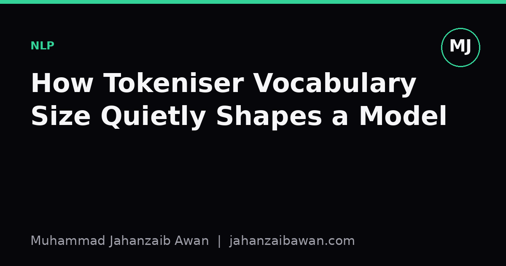

How Tokeniser Vocabulary Size Quietly Shapes a Model
A single word, broken down three different ways, reveals why vocabulary size is not just a storage decision but a behavioural one.

Why vocabulary size is not a footnote
When people describe a language model, they usually lead with parameter count or architecture, and the tokeniser gets mentioned, if at all, as a preprocessing detail. I think that is a mistake. The tokeniser decides what the model's fundamental unit of thought is, and the size of its vocabulary changes behaviour in ways that ripple through training speed, generalisation, and how the model handles rare or unusual words. It is one of the few design choices that touches almost everything downstream, and it is often fixed early and never revisited.
The core tension is simple to state. A small vocabulary forces the tokeniser to break words into many small pieces, which keeps the vocabulary table compact but makes sequences longer. A large vocabulary lets common words stay whole, shortening sequences, but it bloats the embedding table and leaves the model with less exposure to each individual rare token during training. Neither extreme is free, and the right answer depends on what you are optimising for. A worked example makes this concrete rather than abstract.
One word, three vocabularies
Take the word 'unhappiness'. With a tiny subword vocabulary of a few hundred tokens, a byte pair encoding tokeniser might only have learned very short, frequent fragments, so it could split this into something like 'un', 'happi', 'ness', or even further into 'un', 'ha', 'pp', 'i', 'ness' if the merges have not progressed far. That is four or five tokens to represent one word. With a mid-sized vocabulary of around 30,000 tokens, typical of many general-purpose subword tokenisers, 'unhappiness' is common enough that it might be covered by two tokens, perhaps 'unhappi' and 'ness', or even held whole if it appeared often enough in the training corpus used to fit the tokeniser. With a very large vocabulary of 100,000 or more tokens, 'unhappiness' is very likely a single token on its own.
Now scale this up. Imagine encoding a sentence of roughly fifteen words. With the tiny vocabulary, that sentence might expand to forty or more tokens because almost every word gets chopped into fragments. With the mid-sized vocabulary, the same sentence might land at eighteen to twenty tokens, close to one token per word with some exceptions. With the very large vocabulary, it could compress to fourteen or fifteen tokens, occasionally fewer than the word count if common multi-word patterns get merged. That difference, forty tokens versus fifteen, is not cosmetic. It means the tiny-vocabulary model needs roughly three times as many computation steps to process the same sentence, and every one of those steps consumes context window budget and attention computation that scales quadratically in many architectures.

What this does to training and generalisation
Sequence length is the most visible effect, but it is not the only one. Consider how often each token gets seen during training. With the tiny vocabulary, the fragment 'un' appears in hundreds of different words, so the model sees it constantly and learns a very robust representation, but that representation carries little specific meaning on its own. It is a workhorse piece, not a concept. With the huge vocabulary, 'unhappiness' as a whole token might appear only a few hundred times in a large training corpus, compared to millions of appearances for the fragment 'un'. That token's embedding is undertrained relative to the common fragments, and the model has fewer opportunities to learn how it behaves in context.
This is the rare-word problem in miniature. A model built on a very large vocabulary will handle common words efficiently but can stumble on genuinely rare, technical, or domain-specific terms, because those terms either got their own barely-trained token or got split in an inconsistent, almost arbitrary way depending on what happened to be frequent in the tokeniser's training data. A model built on a small vocabulary never has this problem in the same form, because everything is built from a shared alphabet of frequent fragments, but it pays for that robustness with longer sequences and a harder compositional task, since the model must reconstruct meaning from more, smaller pieces every time.
There is also a subtler effect on what the model finds easy to generalise. Morphologically related words like 'happy', 'unhappy', and 'unhappiness' share the fragment 'happi' under a small or mid-sized vocabulary, which can help the model transfer sentiment or meaning across related forms almost for free, since the shared token carries shared signal. Under a very large vocabulary where each of these becomes its own whole token, that shared structure is invisible to the model unless it learns the relationship purely from co-occurrence statistics, which takes more data and more capacity. This is one reason agglutinative or morphologically rich languages often benefit from smaller, more fragment-heavy vocabularies, while vocabularies tuned mainly on English text can behave oddly when applied elsewhere.
The practical takeaway
If you are choosing or evaluating a tokeniser, do not treat vocabulary size as a hyperparameter you set once and forget. Check what happens to your actual domain text under different vocabulary sizes before committing. Measure average tokens per word or per sentence on a representative sample, because that number predicts both your effective context length and your training cost. If your domain has many rare technical terms, a mid-sized vocabulary that still fragments gracefully may generalise more reliably than a huge vocabulary tuned on generic web text, even though the huge vocabulary looks more efficient on paper.
It is also worth testing behaviour directly on the kind of rare or compound words that matter for your task, rather than trusting aggregate statistics alone. Encode a handful of genuinely unusual but important terms from your domain and look at how many pieces they become and whether those pieces are shared with related words you care about. That five-minute check, done before training rather than after something goes wrong, tells you more about expected model behaviour than the vocabulary size number by itself ever will.